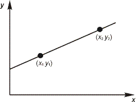
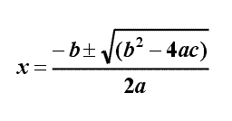
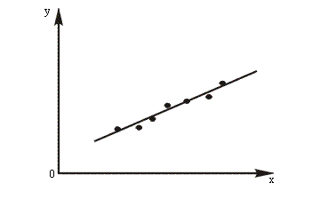
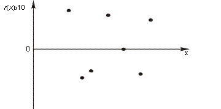
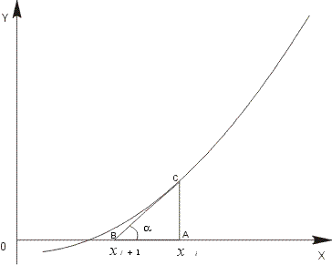
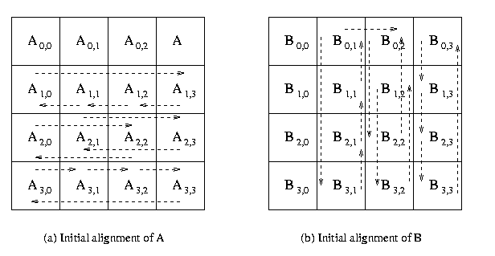
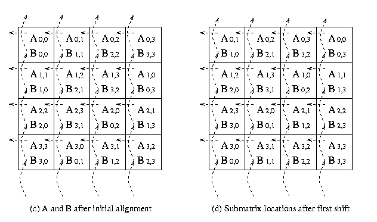
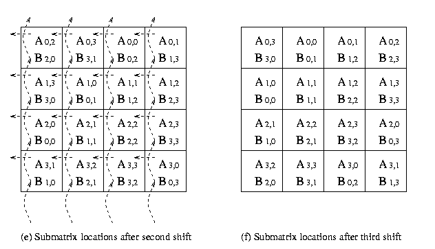

|
hyPACK-2013 : Prog. Using MPI 1.X and Fortran 90 language
|
|
MPI Fortran 90 programs on Dense Matrix Computations (
Vector - Vector, Matrix -Vector, Matrix-Matrix Multiplication) are
considered for execution on Message Passing Cluster or Multi Core Systems that support
MPI library.
|
Example 1
|
Fortran 90 program to print Hello World program.
|
Example 2
|
Fortran 90 program to print Welcome Message .
|
Example 3
|
Fortran 90 program to find equation of line joining two distinct points .
|
Example 4
|
Fortran 90 program to compute Matrix-Vector multiplication using intrinsic function MATMUL ( Use Math Library function)
|
Example 5
|
Fortran 90 program to find root of a quadratic equation.
|
Example 6
|
Fortran 90 program for Least Square Approximation method.
|
Example 7
|
Fortran 90 program to find the roots of equation f(x) = 0 using Newton Raphson
method.
|
Example 8
|
Fortran 90 program to solve a system of linear equations Ax = b using
Gaussian Elimination method.
|
Example 9
|
Fortran 90 program to compute Matrix and Matrix Multiplication
using block checkerboard partitioning and Cannon Algorithm. (Assignment)
|
Example 10
|
Write an MPI fortran90 program performing MPI I/O to single file (Using MPI 2.0).
|
|
|
Description of Programs: MPI- Fortran 90
|
|
|
MPI Fortran 90 programs on Dense Matrix Computations are
considered for exeuction on Multi Core Systems that support
MPI library.
|
|
Example 1 :
Description of Implementation of Fortran 90 Program to print Hello World!
(Download source code :
f90-hello-world.f90 )
|
- Objective
Write a simple Fortran 90 program to print "Hello World!".
- Description
This program prints the message "Hello World!" on screen when it executes.
- Input
None
- Output
Message "Hello World!".
|
|
Example 2 :
Description for implementation of Fortran 90 program to print Welcome Message
(Download source code :
f90-welcome.f90 )
|
-
Objective
Write a simple Fortran 90 program to print which asks user his/her title, first name and last name,
and prints a welcome message using both full name and first name.
- Description
This program performs simple character manipulation. However, there are some slight difficulties in
combining the title, first and last names in a form which will avoid multiple spaces within the
composite name. The most useful intrinsic procedure TRIM is used. TRIM removes any trailing blanks
from the character string provided as its argument. Notice that TRIM has been used in the second
PRINT statement to ensure that the question mark at the end of the question comes immediately after
the name, and not separated from it by several spaces.
- Input
Title, first name and last name of an user.
- Output
Welcome message using both full name and first name.
|
|
Example 3 :
Description for implementation of Fortran 90 program to find equation of line joining two distinct points.
(Download source code :
f90-linear-eqn.f90 )
|
- Objective
Write Fortran 90 program to calculate equation of line from given two distinct points.
- Description :
Each process reads respective input array of different size n/p
from the given input file. The process wit rank 0 accumalates the total number of integers to be recevied
from the each process and allocates memory for the output integer array and performs MPI_gatherv operation.
A straight line is defined by an equation of the form
ax + by + c = 0
and at first sight we could simply use the three coefficients of
this equation as the representation of a line. However these
three coefficients are not unique.

Figure 1 : Line joining two distinct points
The slope of the line is (y2 - y1)/(x2 -x1) if x1 is not equal to x2.
"At any point (x, y) other than (x1, y1), the slope is (y - y1) / (x - x1).
Therefore equation of line becomes
(x2 - x1)(y - y1) = (y2 - y1)(x - x1)
(1)
Rearranging equation (1) we have
(y2 - y1)x + (x1- x2)y - y2x1
+ y1x1 + y1x2 - y1x1
= 0
Therefore
a = y2 - y1
b = x1 - x2
c = y1x2 - y2x1
In this example we have defines two data types, one to represent a point by means of its coordinates in two
dimensional space only and the other to represent a line which is also in two dimensional space by the coefficients
of its defining equation. We have assumed that the user does not supply two
identical points.
- Input
Coordinates of two distinct points.
- Output
Equation of line joining two distinct points.

|
|
Example 4 :
Description for implementation of Fortran 90 program to compute Matrix-Vector multiplication using intrinsic function MATMUL
(Download source code :
f90-matrixvector-mult.f90 )
|
- Objective
Write a Fortran 90 program for matrix-vector multiplication using intrinsic function MATMUL
- Description
Fortran 90 provides some intrinsic functions specifically designed for vector and matrix
operations, where it is assumed that matrices are stored in two dimensional arrays and vectors are
stored in one dimensional arrays.. Fortran 90 contains a large number of other intrinsic functions
which operate on arrays of any dimension. In this example Matrix_A and Vector are
allocated using ALLOCATE statement. ALLOCATE statement dynamically allocates space
for an allocatable array. Intrinsic function MATMUL is used to perform matrix and vector
multiplication and the resultant vector is stored in C. Currently allocated arrays are
deallocated by the related DEALLOCATE statement. The DEALLOCATE statement has the
effect of changing its atatus to not currently allocated and making the memory space that it was
using available for other purpose.
- Input
Size of the matrix and Vector
- Output
Output Vector
|
|
Example 5 :
Write f90 Program to find roots of a quadratic equation
(Download source code :
f90-root-quadratic-eqn.f90 )
|
- Objective
Write a MPI program to gather values from each process and store the output values in the global integer
array A of dimension n on p process of cluster. Use
MPI_AllgatherCommunication library call in the program.
- Description
On the surface, finding root of a quadratic equation, appears to
be a simple problem. However, even such a simple problem
involves subtle numerical issues if we are trying to produce a
robust software.
Consider simple quadratic equation
ax2 + bx + c = 0
where a is not equal to zero, has two roots, given by the
formula

It is immediately apparent that there are three possible cases:
(1) b2 > 4ac in which case the equation will have
two real roots.
(2) b2 = 4ac in which case the equation will have
one root (or two coincident roots)
(3) b2 < 4ac in which case the equation will have
no roots (or at least no real roots, and we are not concerned with imaginary roots in this program.
In this example we have demonstrated the use of CASE
statement. However there are two major difficulties. The first
of these is that the values of the coefficients in this sort of
problem will normally be real, and therefore the expression
b2 < 4ac is also real.
But the case_expression in a
CASE statement must be integer, character or logical.
The other problem concerns with case 2, where the value of the
expression is 0. In particular we should never compare two real
numbers for equality, as two numbers which are mathematically
equal will often differ very slightly if they have been
calculated in a different way. This difficulty is avoided by
comparing the difference between two real numbers with a very
small number. Thus the second case can be rewritten as
|b2 - 4ac| < epsilon
In this program we have dealt with both these problems at the
same time by dividing the value of b2 - 4ac by epsilon
and then assigning the result to an integer for use in CASE
statement. This means that if |b2 - 4ac| < epsilon
the result off the division is between -1 and +1, and the
integer stored, as a result of truncation is 0. If b2 - 4ac
> epsilon then the result stored is positive integer,
while b2 - 4ac < epsilon the result
stored is negative integer. We have assumed that a is a non-zero
value.
- Input
Coefficients of a quadratic equation where a is non-zero
value.
- Output
Roots of a quadratic equation.
|
|
Example 6 :
Description for implementation of Fortran 90 program for Least Square Approximation method.
(Download source code :
f90-leastsquare.f90 )
|
- Objective
Write Fortran 90 program for Least Square Approximation method.
Write a Fortran 90 program to calculate the value of Young's modulus of given material and
the natural length of the wire using Least Square Approximation method
- BackGround & Description
Data fitting by least square Method
A frequent situation in experimental sciences is that data has been collected which it is believed, will satisfy a linear relationship of the form
y = ax + b
However, due to experimental error, the relationship between the data collected at different times will rarely be identical, and can typically be represented graphically as shown in Figure 2. Fitting a straight line through the data in such a way as to obtain the fit which most closely reflects the true relationship is therefore, a widespread need. One well-established method is
known as the method of least squares.

Figure 2 : Experimental data which exhibits a linear relationship.

Figure 3 : Residuals for the data from Figure 2
This method can be applied to any polynomial, or even to more general functions, but for the present we shall only consider the linear case.
If we assume that the equation
y = ax + b
is a possible best fit then we can test its accuracy by calculating the predicted values of y for the actual
data values of
x and comparing them with the corresponding data values. The difference between a calculated value
y' and and experimental value y is called the residual, and the method of least squares
attempts to minimize the sum of the squares of the residuals for all the data points. Figure
3 shows the residuals for the data in Figure 2 in graphical form, and it can easily be seen that using the
square of the residuals eliminates the problem caused by some predicted values being too
large and others being too small.
- Description
In this example the extensions produced in the wire by suspending various weights from it were
measured very accurately. Young's modulus is defined by the equation
E = stress / strain
which can be expressed as
E=(f /A) / (e /
L) or E = (fL) /
Ae
where f is the applied force (the weight), A is the cross-sectional area of the wire (measured at several
points and averaged), e is the extension, and L is the unstressed length of the wire.
In this case, in order to eliminate the effect of any curl or kinking in the wire no measurements were
taken in a completely unstressed condition, but the length of the wire was measured instead under an initial
load and then under various heavier loads.
From the above definition of Young's modulus we can derive the equation
e = kf
where k = L / AE
However, we do not have the value of e, but rather the value of
l, where
e = l - L
We therefore need to fit the equation
l = kf + L
to the experimental data. We shall then be able to calculate the value of
E.
In accordance with good practice all the constants required for problem
are placed in a module so that they can be easily accessed from any procedure in the
program.
In this example we have used SUM and DOT_PRODUCT intrinsic
functions.
- Input
Read length of a wire under various load from a file least_sq.inp which is as follows.
9
10 39.967
12 39.971
15 39.979
17 39.986
20 39.993
22 40.000
25 40.007
28 40.016
30 40.022
0.025
- Output
Value of Young's modulus and natural length of wire.
|
|
Example 7 :
Description for implementation of Fortran 90 program to find the roots of
equation f(x) = 0 using Newton Raphson method.
(Download source code :
f90-newton-raphson-root.f90 )
|
- Objective
Write a fortran 90 program to find root of equation f(x) = 0 using
Newton Raphson method.
- BackGround & Description
f(x)
at the end points of the interval, but not the value of f(x)
at those points. Another weakness is that, for the method to
work at all, the initial two points must be bracket a
root.
It is possible to combine interval-bisection with such faster
methods and retain much of the best of both worlds, namely fast
convergence and guaranteed convergence.
- Description
Newton's method, sometimes known as the Newton-Raphoson
method. This method uses not only function values but also
approximation. Figure 4 shows how, given the gradient
at a point xi, it is easy to obtain a new
estimate for the root. In this method, we do not bracket a root
by an interval but, instead, generate a sequence of
approximation that if successful tend to the root.

Figure 4 : Newton Raphson Approximation
From Figure 4 we can readily see that
xi+1 = OB
= OA-AB
= xi - AB
= xi - (AC
/ tan a )
= xi - (f(xi)
/ f '(xi))
where f '(xi) is the gradient of
the curve at the point C, ((xi, f
'(xi)), which is equal to tan a.
This formula
xi+1 = xi - (f(xi)
/ f '(xi)
is known as Newton's iteration, and is the basis for Newton'
method of approximation to a root.
An external function is used to define the equation and its first derivative
- Input
X-coordinate of the point which can be used as the
starting point for the interpolation and number of iterations.
- Output
Estimated value of root and its first derivative.
|
|
Example 8 :
Description for implementation of Fortran 90 program to solve a system of linear equations Ax = b using Gaussian Elimination method.
(Download source code :
f90-gauss-elimination.f90 )
|
- Objective
Write a fortran 90 program to solve a system of linear equations
Ax = b using Gaussian elimination method.
- BackGround & Description
The system of linear equations [A]{x} = {b} is given by a0,0
x0 + a0,1
x1 + ...+ a0, n-1
xn-1 = b0 ,
a1,0 x0 + a1,1
x1 + ...+ a1, n-1
x n-1 = b1
,
...........................................................................
...........................................................................
...........................................................................
an-1,0 x0
+ an-1,1 x1
+ ...+ an-1, n-1 x n-1
= bn-1 .
In matrix notation, this system of linear equation is written
as [A]{x}={b} where A[i, j]
= ai, j , b is an n x 1
vector [bo,b1,...,bn-1]T,
and is the desired solution vector [xo,x1,...,xn-1]T.
We will make all subsequent references to ai, j
by A[i, j] and xi by x[i
].
Iterative methods are techniques to solve systems of
equations of the form [A]{x}={b} that generate a sequence of
approximations to the solution vector x. In each iteration, the
coefficient matrix A is used to perform a matrix-vector
multiplication. The number of iterations required to solve a
system of equations with a desired precision is usually data
dependent; hence, the number of iterations is not known prior to
executing the algorithm. Therefore, we can analyze the
performance and scalability of a single iteration of an
iterative method. Iterative methods do not guarantee a solution
for all systems of equations. However, when they do yield a
solution, they are usually less expensive than direct methods
for matrix factorization for large size of matrices.
- Description
Suppose we have a system of n linear equations in n unknowns:
a1,1x1
+ a1,2 x2
+...... + a1,nx n = b1
a2,1x1
+ a2,2x2
+ ...... + a2,nx
n = b2
..........................................................
................................................................
an,1x1 + a
n,2x2 + ...... + an ,
nxn = bn
Gaussian elimination will turn this system of equations into an equivalent system of equations of the form
c 1,1x 1
+ c 1,2 x 2
+ ...... + c 1,nxn
= d
c 2,2 x2 + ...... + c2,nxn
= d2
.
.
.
cn,
nxn = d
n
In this form, all the coefficients below the diagonal are zero, and the matrix of coefficients, for obvious reasons, is said to be
upper triangular. As we shall see, in this form, the system of equations can be solved with no further manipulation.
Gaussian elimination works by subtracting multiples of the first equations from all the other equations below it in such a way that the resulting equations each have a coefficient of 0 for
x1. Thus, the initial system of equations becomes
a1, 1x1
+ a1, 2x2
+ ...... + a1,
nxn = b1
a(1)2, 2x2 + ...... +
a(1)2, nxn
= b( 1
)2
a(2)2, 2x2 +...... +
a(2)2, nxn
= b( 2
) 2
.
.
.
a(2)n, 2x2
+ ...... + a(1)n, nxn = b( 2 ) n
Specifically, for j greater or equal to 2, the jth
the equation is obtained by subtracting the first equation, multiplied by from the original
equation. The superscripts on the coefficients are used to denote that this is step I of the process. The solution of the second set of equations is the same as that of the original system of equations.
We now repeat the process again on the (n - 1) * (n
- 1) system of equations consisting of the second to the nth equations. Subtracting appropriate multiples of the second equation from the equations below it, we obtain a system of equations in which all the equations after the second have zero for the coefficient of
x2.
Proceeding iteratively, after n-1 steps, we obtain a system of equations of the form
a1,1x1
+ a1,2x2
+ a1,3x3
+ a1,4x4
+ ......+ a1,n-1xn-1
+ a1,nxn =
b1
a(1)2,2x2
+ a(1)2,3x3
+ a(1)2,4x4
+ ...... + a(1)2,n-1xn-1
+ a(1)2,nxn
= b( 1 ) 2
a(2)3,3x3
+ a(2)3,4x4
+ ...... + a(2)3,n-1xn-1 +
a(2)3,nxn = b(
2 )3
a(3)4,4x4
+ .+ a(3)4,n-1xn-1+
a(3)4,nxn=
b( 2
)4
.
.
.
a(n - 2)n-1,n-1xn-1
+ ...... + a(n - 2)n-1,nxn=
b(n - 2)n-1
a(n - 1)n,nxn= b(n - 1)n
This process is called Gaussian elimination, and the
ai,i (i-1)(the element along the diagonal) are called
pivots.
Now the nth equation is solved for xn by dividing by
an,n(n-1). This value is then substituted into the
(n - 1)th equation, which can then be solved for (xn
-1). The values for xn and xn-1 are substituted in the
(n-2)th equation. which is then solved for
xn-2. We proceed backwards through the set of equations in this way until we finally put the values determined for
xn, xn-1,
...x3,x2 into the first equation and solve it for
x1. This processed, for obvious reasons, is called
back substitution.
We can see that the Gaussian elimination process will fail if, at the
ith step, the coefficient ai,i(i-1) is 0. We would in this case be unable to make all the coefficients of
xi in the equations below it 0, since subtracting any multiple of 0 leaves a number unchanged. If this situation occurs, however, we could interchange the
ith equation with one below it that does not have a 0 for the coefficient of
xi, and then proceed. If there is no such equation, then it can be proved that the original system either has no solution or an infinite set of solutions. Observe that changing the order of occurrence of the equations does not change their solution.
In fact, we can go somewhat beyond this interchange procedure. If a pivot element is small, then large multiples of the equation containing it
must be used during the elimination process. This will multiply any errors (due to round-off effects) in the other coefficients of this equation. Intuitively, we can see that this is undesirable. So, for reasons of numerical stability, at the beginning of the
ith step, we will reorder the equations from the
ith one down, so that one that has the largest absolute value for the coefficient of
xj becomes the ith equation.
In this program two subroutines 'gaussian_elemination' and 'back_substitution' are called by another subroutine
'gaussian_solve'. We do not want a user to be able to call
'gaussian_elimination' or 'back_substitution' directly. As well as the subroutine
'gaussian_solve' will use assumed-shape dummy arguments, it must have an explicit interface in the main program. To accomplish both of these aims, all three subroutines are put in a module called
'Linear_Equations' being public
- Input
Read Matrix and vector from file gauss.inp which is as below.
4
8 3 1 1
1 4 2 1
1 6 2 2
3 1 3 8
5
1
5
4
- Output
Solution x of matrix system Ax = b.
|
|
Example 9 :
Description for implementation of MPI program to
compute Matrix Matrix Multiplication using block checkerboard
partitioning and Cannon Algorithm. (Assignment)
|
- Objective
Write a fortran 90 program to compute Matrix Matrix Multiplication using block checkerboard
partitioning and Cannon Algorithm
-
Objective
Write a f90 program, for computing the matrix-matrix
multiplication on p on Single core or SMP System. Use block
checkerboard partitioning of the matrices and Cannon's Algorithm.
Assume that size of the square matrices i.e. p= q2 and
the size of
square matrices A and B is evenly divisible by
q. It is assumed that the number of blocks are equal to the number of
processors as explained in Cannoon's Algorithm
-
Description
Cannon's algorithm is based on cartesian virtual topology. Assume that A and B are
square matrices of size
n and C be the output matrix. These matrices are dived
into blocks or submatrices to perform matrix-matrix operations in parallel
.For example, an n x n matrix A can be regarded as
q x q array of blocks Ai, j (0<=i
<q, 0<= j < q) such that each block is an (n/q)
x (n/q) submatrix. We use p processors to implement the
block version of matrix multiplication in parallel by choosing q
as a square root of p and compute a distinct block Ci,
j on each processor. Block and cyclic checkerboard
partitioning of a 8 x 8 matrix on a square grid (4 x 4) of processors
is shown in the Figure 5

Figure 5 : Checkerboard partitioning of 8 x 8 matrices on 16 processors.
The matrices A and B are partitioned into p
blocks, A i, j and
B i, j (0<=i < q, 0<=
j < q) of size (n/q x n/q) on each
process. These blocks are mapped onto a q x q logical
mesh of processes. The processes are labeled from P0,0 to
Pq-1,q-1. An example of of this situation is shown in
Figure 14 Process Pi, j initially store block
matrices Ai, j and Bi, j and
computes block Ci, j of result matrix. To compute
submatrix Ci, j , we need all submatrices , Ai,
k and Bk, j ( 0 <= k <
q ) . To acquire all the required blocks, an all-to-all broadcast of
matrix Ai, j 's is performed in each row
and similarly in each column of matrix Bi, j's.
MPI collective communication is used to perform this operations.
After Pi, j acquires, A i,0 ,
A i,1 , A i,2 ,
A i, q-1 and B0, j ,
B1, j , B2, j , Bq-1,
j , it performs the serial block matrix to matrix multiplication
and accumulates the partial block matrix Ci, j
of matrix C . To obtain the resultant product matrix C, processes
with rank 0 gathers all the block matrices by using MPI_Gather
collective communication operation.
MPI provides a set of special routines to virtual
topologies. An important virtual topology is the Cartesian
topology . This is simply a decomposition in the natural co-ordinate
( e.g., x,y,z) directions.
As discussed above, there are p processors arranged in q
x q square grid of processors and the input matrices, A
and B are distributed among the processes in
checkerboard fashion. It results in constructing p
block matrices of A and B. It uses only point-to-point
communication for circularly shifting blocks of matrix A
and matrix B among p processes.
The algorithm proceeds in q stages. The first step
in this algorithm is to perform initial alignment of the
block matrix A and block matrix B. The blocks of
matrix A are circularly shifted to the i
positions to left in the row of the square grid of
processes, where i is the row number
of the process in the mesh. Similarly, blocks of matrix B are
circularly shifted j positions upwards, where j
is the column number of the process in the
processes mesh. This operation is performed by using MPI_Sendrecv_replace
. MPI_Send and MPI_Recv is not used
for point-to-point communication, because if all the processes
call MPI_Send or MPI_Recv in different
order the deadlocked situation may arise .
The algorithm performs the following steps in each stage :
1. Multiply the block of matrix A and matrix B and
add the resultant matrix to get the block matrix C,
which is initially set to zero.
2. Circularly shift the blocks of matrix A to left in
the rows of the processes and the blocks of
matrix B upwards in the
columns of the square grid of processes in a wrap around manner.
The communication steps for 4 x 4 square grid of processors
mesh are explained in the Figure 6.



Figure 6 : The communication steps in
Cannon's Algorithm on 16 processors.
- Input
Assume A and B are real square matrices of size n . The
input matrices are
A and B. Format for the input file is given below.
The input file for the matrices A and B
should strictly adhere to the following format.
#Line 1 : Number of Rows (n); Number of columns(n).
#Line 2 : (data) (in row-major order. This means that the data of second row follows that of
the first and so on.)
-
Input file &
Input file 1
A sample input file for the matrix A (8 x 8) is given below
8 8
1.0 2.0 3.0
4.0 2.0 3.0
2.0 1.0
2.0 3.0 4.0
2.0 3.0 2.0
1.0 1.0
3.0 4.0 2.0
3.0 2.0 1.0
1.0 1.0
4.0 2.0 3.0
2.0 1.0 1.0
4.0 2.0
2.0 3.0 2.0
1.0 2.0 3.0
2.0 2.0
3.0 2.0 1.0
1.0 2.0 1.0
1.0 1.0
2.0 1.0 4.0
3.0 2.0 1.0
3.0 3.0
4.0 1.0 2.0
1.0 2.0 3.0
4.0 3.0
Input file 2
A sample input file for the matrix B (8 x 8) is given below
8 8
1.0 2.0 3.0
4.0 2.0 1.0
2.0 1.0
1.0 2.0 3.0
4.0 2.0 1.0
2.0 1.0
1.0 2.0 3.0
4.0 2.0 1.0
2.0 1.0
1.0 2.0 3.0
4.0 2.0 1.0
2.0 1.0
1.0 2.0 3.0
4.0 2.0 1.0
2.0 1.0
1.0 2.0 3.0
4.0 2.0 1.0
2.0 1.0
1.0 2.0 3.0
4.0 2.0 1.0
2.0 1.0
1.0 2.0 3.0
4.0 2.0 1.0
2.0 1.0
-
Output
Prints final matrix-matrix product matrix C.
The output of the matrix - matrix multiplication is given below :
18.0 36.0 54.0 72.0
36.0 18.0 36.0 18.0
18.0 36.0 54.0 72.0
36.0 18.0 36.0 18.0
17.0 34.0 51.0 68.0
34.0 17.0 34.0 17.0
19.0 38.0 57.0 76.0
38.0 19.0 38.0 19.0
17.0 34.0 51.0 68.0
34.0 17.0 34.0 17.0
12.0 24.0 36.0 48.0
24.0 12.0 24.0 12.0
19.0 38.0 57.0 76.0
38.0 19.0 38.0 19.0
20.0 40.0 60.0 80.0
40.0 20.0 40.0 20.0
|
|
Example 10 :
Write an MPI fortran90 program performing MPI I/O to single file (Using MPI 2.0)
(Download source code :
f90-mpi-io-single-file.f90 )
|
- Objective
Write an MPI program performing MPI I/O (Writing) to single file (Using MPI 2.0).
- Description
MPI process share a single file instead of the writing to seperate files, thus avoiding the
having multiple files. This shows performance advantages of parallelism adopted using MPI.
The new library calls of MPI are used to sharing a a file among processes. Here,
MPI_COMM_WORLD libray call is used instead of
MPI_COMM_SELF libray call. This indicates that all the processes are opening a
single file together and it is a collective operations on the communicator, on all
pariticpating process.
- Input
The input file holding the square matrix (Number of Rows, Columns of the matrix)
- Output
Single Output file
|
|
| |
|